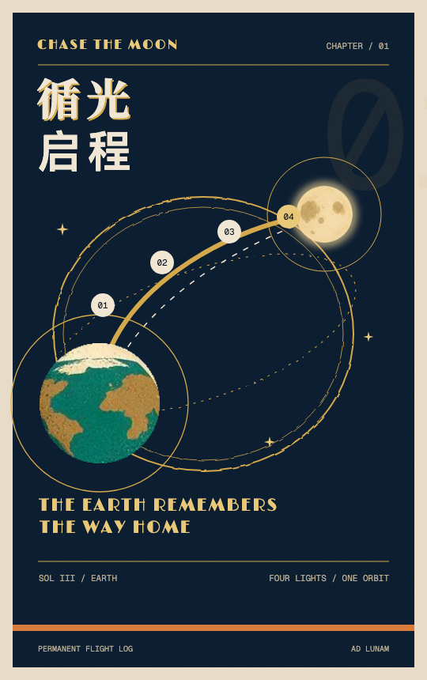
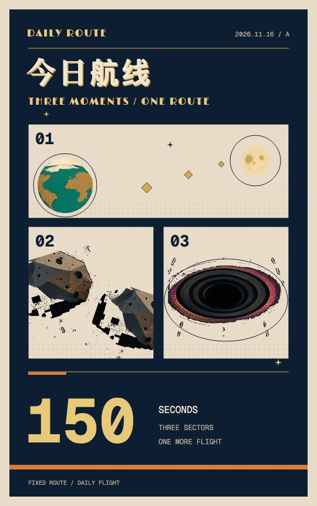
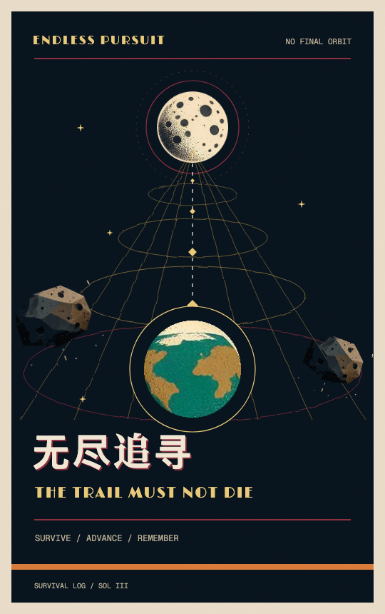
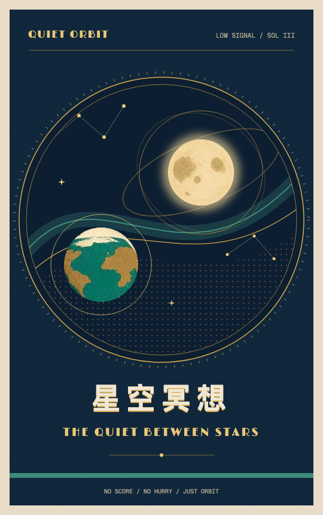

四种心率，一套宇宙。
成长、每日、无尽与冥想共用深空蓝、奶油纸、金色航线和印刷颗粒，但不共用同一种构图。此页是主视觉审看稿，不是游戏运行截图。

成长 / 循光启程
SVG 源稿任务环、四个节点与地月归途。强调有方向的成长。

每日 / 今日航线
SVG 源稿漫画三格与大时长。每天一张明确的航行海报。

无尽 / 无尽追寻
SVG 源稿远景暗月与近大远小的航道。紧张感来自纵深，而不是巨大天体。

冥想 / 安静轨道
SVG 源稿观测窗、星座与层叠轨道带。安静，但不空。